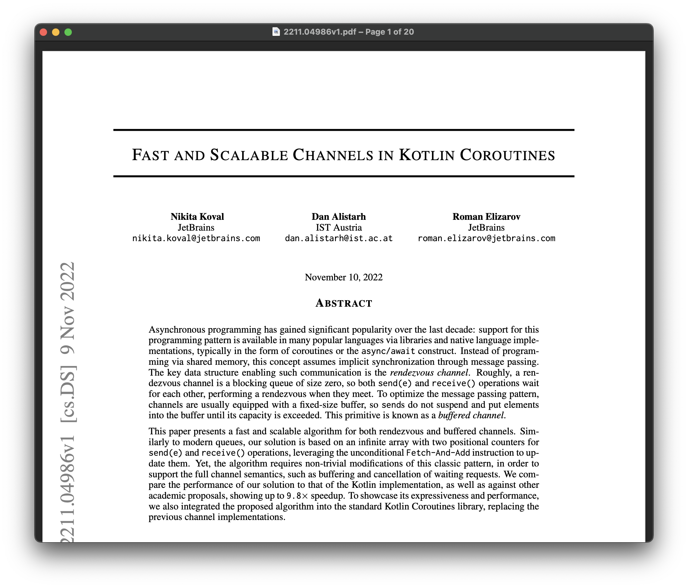
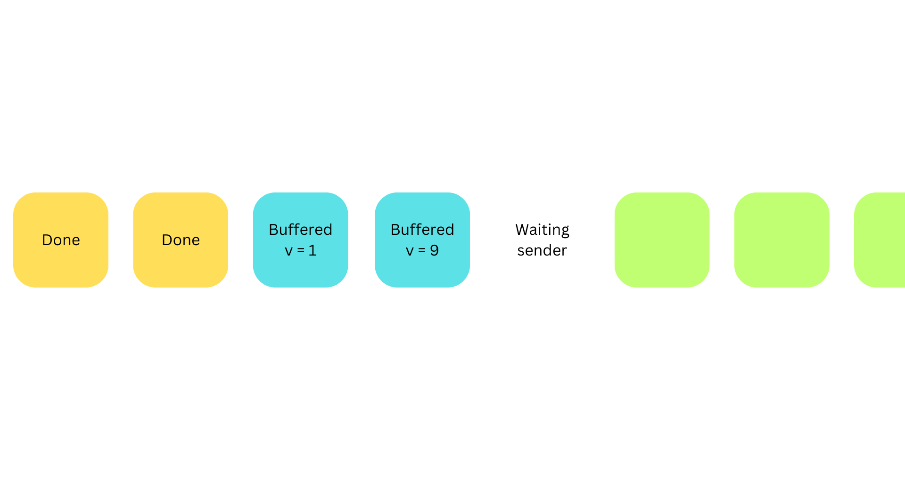
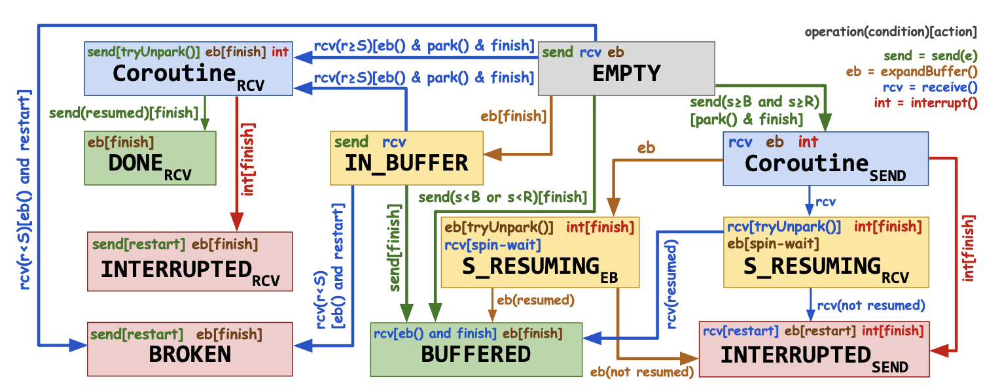
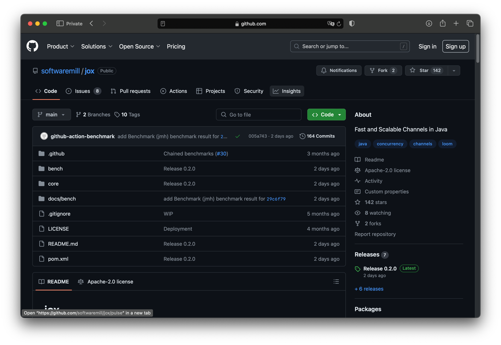
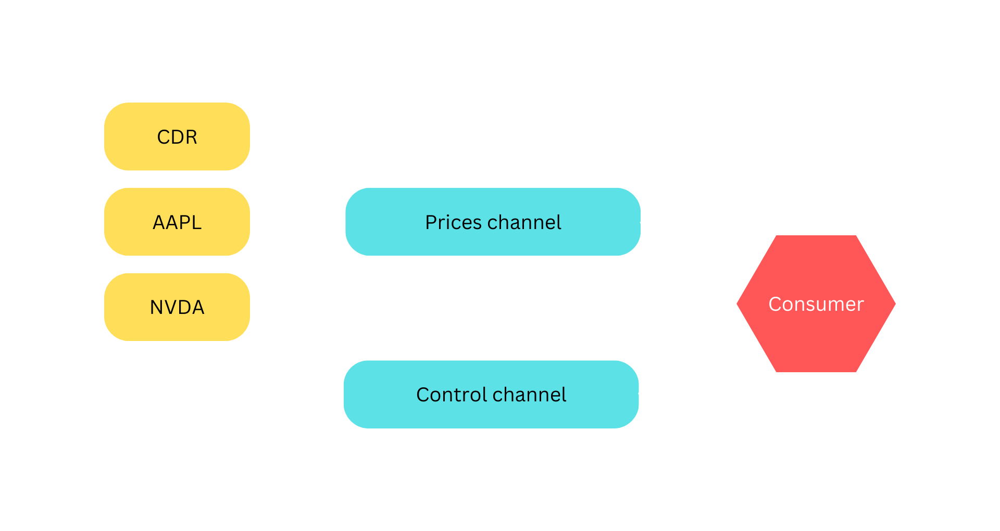
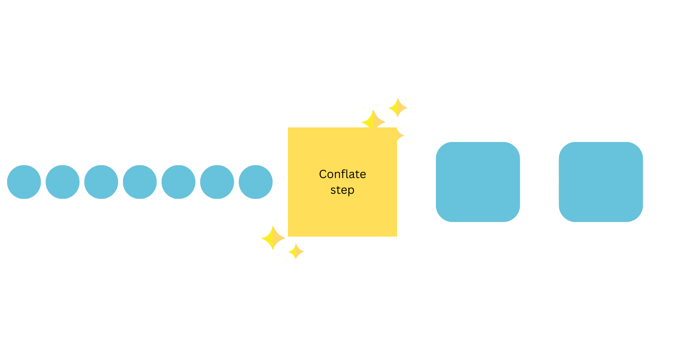
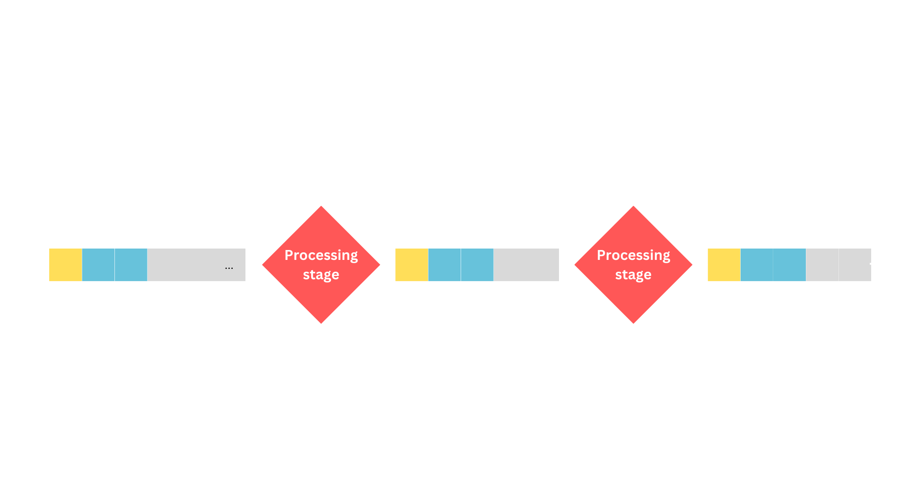
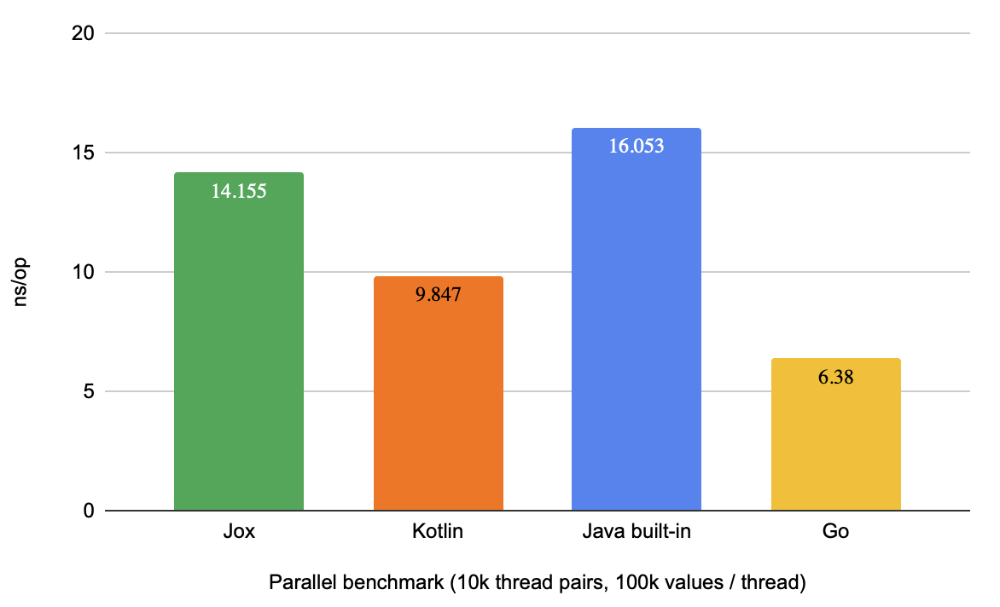
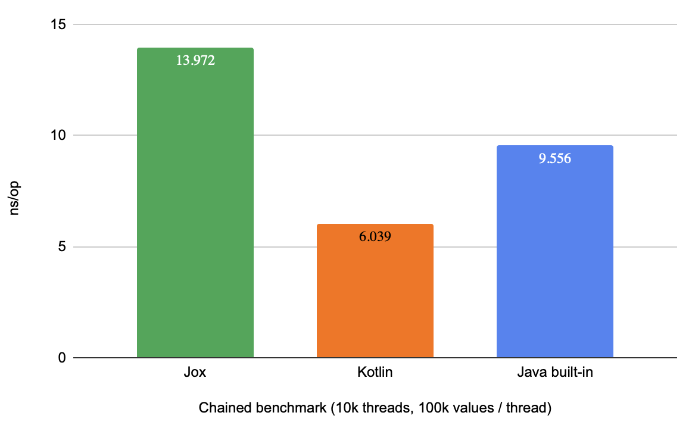

```text Loading ... ``` <!-- .element: style="text-align: center" --> --- ## Loom ∈ Java 21+ ```java [|2,6] timed(() -> { var threads = new Thread[10_000_000]; var results = ConcurrentHashMap.newKeySet(); for (int i=0; i<threads.length; i++) { threads[i] = Thread .ofVirtual() .start(() -> results.add(0)); } for (Thread thread : threads) { thread.join(); } return null; }); ``` <!-- .element: class="fragment" --> ``` ~2 seconds ``` <!-- .element: class="fragment" --> --- ## Inter-thread communication * shared data? * `volatile` fields * critical sections guarded by locks * → volatile code * and queues might not be enough ... --- ## ## Go-like channels for Java using Project Loom <!-- .element: style="color: #42AFFAFF;" --> ### [Adam Warski](https://warski.org), [SoftwareMill](https://softwaremill.com), June 2024 --- <img src="img/gopher.png" style="height: 200px;"> * not a rich language, in terms of language features * loved by some, hated by some * proved communicating using channels works ([CSP](https://en.wikipedia.org/wiki/Communicating_sequential_processes)) --- ## Let's make channels in Java! --- ## got there first --- <!-- .element: data-transition="none" --> <img src="img/kotlin2.png" style="height: 200px;"> ## got there first --- ## Channels in Kotlin ```kotlin val channel = Channel<Int>() launch { for (x in 1..5) channel.send(x * x) } repeat(5) { println(channel.receive()) } println("Done!") ``` --- ## Channels in Kotlin * fast * support `select` * support completion (closing) --- <a href="https://arxiv.org/pdf/2211.04986"></a> ---  --- 
## Jox  --- ```java public final class Channel<T> implements Source<T>, Sink<T> { ... } ``` --- ```java [1|3-4|5] var ch = new Channel<Integer>(4); ch.send(1); ch.send(2); System.out.println(ch.receive()); ``` So far, a simple queue <!-- .element: class="fragment" --> --- ```java [1-2|4-5|8] var ch1 = new Channel<String>(); var ch2 = new Channel<String>(); Thread.ofVirtual().start(() -> { ch1.send("v1"); }); Thread.ofVirtual().start(() -> { ch2.send("v2"); }); System.out.println( select(ch1.receiveClause(), ch2.receiveClause()) ); ``` --- ```java [4-6|7-10] var ch1 = new Channel<Integer>(); var ch2 = new Channel<Integer>(); Thread.ofVirtual().start(() -> { ch1.receive(); }); Thread.ofVirtual().start(() -> { ch2.receive(); }); var sent = select( ch1.sendClause(13, () -> "first"), ch2.sendClause(25, () -> "second") ); System.out.println("Sent: " + sent); ``` --- ```java var ch = new Channel<String>(4); ch.send("hello"); ch.done(); System.out.println("Received: " + ch.receiveOrClosed()); System.out.println("Received: " + ch.receiveOrClosed()); ``` ```text Received: hello Received: ChannelDone[] ``` <!-- .element: class="fragment" --> --- ```java var ch = new Channel<String>(4); ch.send("hello"); ch.error(new RuntimeException("error")); System.out.println("Received: " + ch.receiveOrClosed()); System.out.println("Received: " + ch.receiveOrClosed()); ``` ```text Received: ChannelError[cause=RuntimeException: error] Received: ChannelError[cause=RuntimeException: error] ``` <!-- .element: class="fragment" -->
## But ... is this useful? --- ```java public class WebSocket { String receive() throws IOException, WebSocketClosedException { ... } } public class Business { void process(Source<String> s) { ... } } ``` How to funnel a `WebSocket` to a `Channel`? --- ## Funnelling: producer ```java [1-12|5,8,10] void wsToChannel(WebSocket ws, Channel<String> c) throws InterruptedException { try { while (true) { c.send(ws.receive()); } } catch (IOException e) { c.error(e); } catch (WebSocketClosedException e) { c.done(); } } ``` --- ## Funnelling: consumer ```java void process(Source<String> s) throws InterruptedException { var run = true; while (run) { switch (s.receiveOrClosed()) { case ChannelDone() -> { run = false; } case ChannelError(Throwable t) -> { run = false; } case String s -> { Thread.sleep(1000); } default -> throw new IllegalStateException(); } } } ``` --- ### Separate data & control channels * many stock tickers, received via multiple WSs * single channel to gather the data * another channel to gather control data (WS errors, completion) ---  --- ## Tickers: producer ```java [1-14|7,10,12] void wsToChannel(String symbol, WebSocket ws, Channel<String> prices, Channel<TickerWebSocketEvent> control) throws InterruptedException { try { while (true) { prices.send(symbol + ": " + ws.receive()); } } catch (IOException e) { control.send(new TickerWebSocketError(symbol)); } catch (WebSocketClosedException e) { control.send(new TickerWebSocketDone(symbol)); } } ``` --- ## Tickers: consumer ```java [1-15|5-6] void consume( Channel<String> prices, Channel<TickerWebSocketEvent> control) { while (true) { switch (select(control.receiveClause(), prices.receiveClause())) { case String p -> { Thread.sleep(1000); } case TickerWebSocketDone d -> { /* ... */ } case TickerWebSocketError e -> { restart(e.symbol(), prices, control); } default -> throw new IllegalStateException(); } } } ``` --- ## Conflate  --- ## Conflate ```java sealed interface Result permits Received, Sent {} record Received(String value) implements Result {} record Sent() implements Result {} ``` --- ## Conflate ```java void conflate(Source<String> from, Sink<Integer> to) throws InterruptedException { var soFar = 0; while (true) { ... } } ``` --- ## Conflate ```java [|3-6|8|12-13] Result result; if (soFar > 0) { result = select( to.sendClause(soFar, Sent::new), from.receiveClause(Received::new) ); } else { result = new Received(from.receive()); } switch(result) { case Received r -> soFar += r.value.length(); case Sent s -> soFar = 0; } ``` --- ## Backpressure Just don't receive* (*) watch out for the implicit thread queues <!-- .element: style="font-size: small" --> ---  --- ### Performance  14 ns/operation is 70 million ops/second --- ### Performance 
## Higher-level interface? First, we need structured concurrency --- ### Ox: structured concurrency++ for Scala Builds on [JEP 453: Structured Concurrency](https://openjdk.org/jeps/453) * provides betters defaults * a programmer-friendly API --- ### Run two computations in parallel ```scala supervised { // ① starts a scope val f1 = fork { // ② can only be called within a scope sleep(2.seconds) 1 } val f2 = fork { sleep(1.seconds) 2 } (f1.join(), f2.join()) // ③ block until fork done } // (1, 2) ``` --- ## Mapping a source ```scala def mapAndPrint(s: Source[String]): Unit = supervised { s.map(s => s.length) // ① starts a virtual thread .foreach(n => // ② blocking receives in a loop println(s"Got string of length: $n") } ``` --- ## More combinators ```scala supervised { Source .unfold(0)(i => Some(i + 1, i + 1)) .throttle(1, 1.second) .mapPar(4) { i => Thread.sleep(5000) val j = i * 3 j + 1 } .filter(i => i % 2 == 0) .zip(Source.unfold(0)(i => Some(i + 1, i + 1))) .foreach(println) } ``` --- ## Looks familiar? ```java var system = ActorSystem.create("streams"); var delayed = CompletableFuture .delayedExecutor(5L, SECONDS); Source.range(1, 100) .throttle(1, Duration.ofSeconds(1)) .mapAsync(4, i -> CompletableFuture .supplyAsync(() -> i * 3, delayed) .thenApplyAsync(k -> k + 1)) .filter(i -> i % 2 == 0) .zip(Source .unfold(0, i -> Optional.of(Pair.create(i+1, i+1)))) .runForeach(System.out::println, system) .toCompletableFuture().get(); ``` --- ### Jox/Ox streams through an Akka lens * cold vs hot processing * two mapping variants: `.map` and `.mapAsView` * you need to decide * both a bug, and a feature
## Summary --- ### Vote / leave feedback in the app - thank you! --- <img src="img/sml.png" alt="SoftwareMill logo" style="height: 180px;"> ### Solving the hard problems that our clients face, using software <!-- .element: style="color: #42AFFAFF;" --> --- ## What's available now * Java 21 w/ virtual threads * [Jox](https://github.com/softwaremill/jox): Fast and Scalable Channels in Java * [Ox](https://github.com/softwaremill/ox): Structured & high-level concurrency and resiliency for Scala --- ## Why jox? * performance comparable to the state-of-the-art * low memory footprint * feature set inspired by Go channels * based on Kotlin's implementation * Apache2 licensed, available on GitHub --- ```java var thankYou = true; ``` <!-- .element: style="text-align: center; font-size:40px;" --> <br /> * direct-style asynchronous streams are possible * Jox gives us backpressured Go-like channels * Ox allows to avoid explicit concurrency with built-in operations & structured approach <a href="https://softwaremill.com"><img src="img/sml.png" alt="SoftwareMill logo" style="height: 180px;"></a>